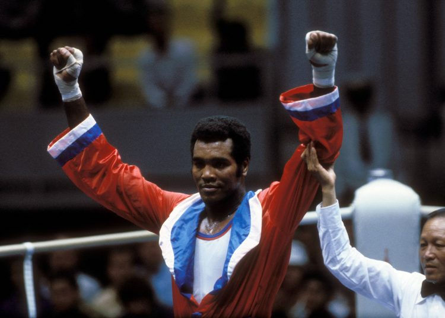
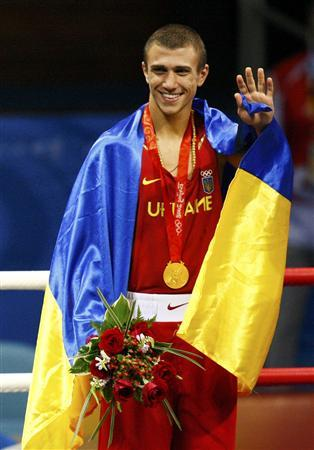
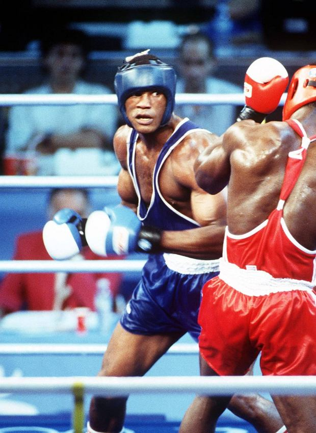
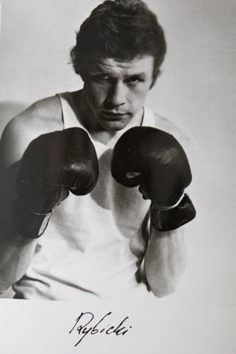
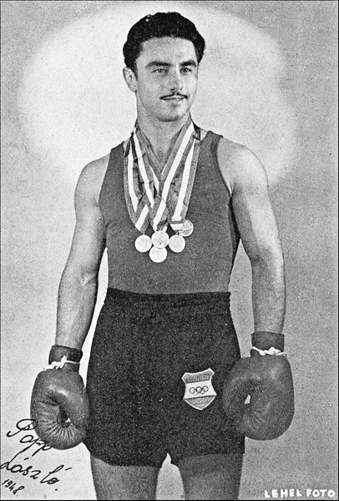

Strona główna
Historia
Regulamin zawodów
Galeria sław

Teofilo Stevenson
Kubańczyk,waga cieżka,3-krotny mistrz olimpijski

Vasyl Lomachenko
Ukrainiec, waga lekka, 2-krotny mistrz olimpisjki, legitymuję się amatorskim rekordem 396-1

Felix Savon
Kubańczyk, waga ciężka, 3-krotny mistrz olimpijski

Jerzy Rybicki
Polak, waga lekkośrednia, mistrz olimpijski z Montrealu

Laszlo Papp
Węgier, waga Srednia, 3-krotny mistrz olimpijski